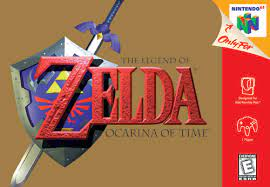

| Título | Resumen | Datos Técnicos | Foto |
Legend of Zelda: Ocarina of Time |
Link, quien emprende una aventura en el reino de Hyrule para detener a Ganondorf, rey de la tribu Gerudo, antes de que encuentre la Trifuerza, una reliquia sagrada capaz de concederle cualquier deseo a su poseedor. Para ello, debe viajar a través del tiempo |
Shigeru Miyamoto 1998 Japón Koji Kondo Nintendo |

|
|---|---|---|---|
Super Mario 64 |
Bowser, el principal antagonista de la franquicia, invade el castillo de la princesa Peach y esconde las fuentes de protección, las Estrellas de poder, en mundos diferentes dentro de pinturas mágicas. Como Mario, el jugador recolecta las estrellas para desbloquear niveles dentro y fuera del castillo de la princesa Peach y así llegar a Bowser y rescatarla. |
Katsuhiko Kanno 1996 Japón Koji Kondo Nintendo |
|
Beat Saber |
Los jugadores son transportados a un entorno virtual en el que dispondrán de dos espadas, en forma de sables de luz, para cortar bloques virtuales que se aproximan al jugador siguiendo el ritmo de la música. El jugador utiliza el casco de realidad virtual junto a los sensores de posición y los controladores de realidad virtual para interactuar con los menús y el entorno durante el juego |
Ján Ilavsky, Vladimir Hrincar 2018 República Checa Ján Ilavsky, Vladimir Hrincar Beat Games |
|
Elden Ring |
Tras la desaparición de un joven, cuatro familias desesperadas tratan de entender lo ocurrido a medida que van desvelando un retorcido misterio que abarca tres décadas |
Hidetaka Miyazaki y George R. R. Martin 2022 Yuka Kitamura FromSoftware |
|